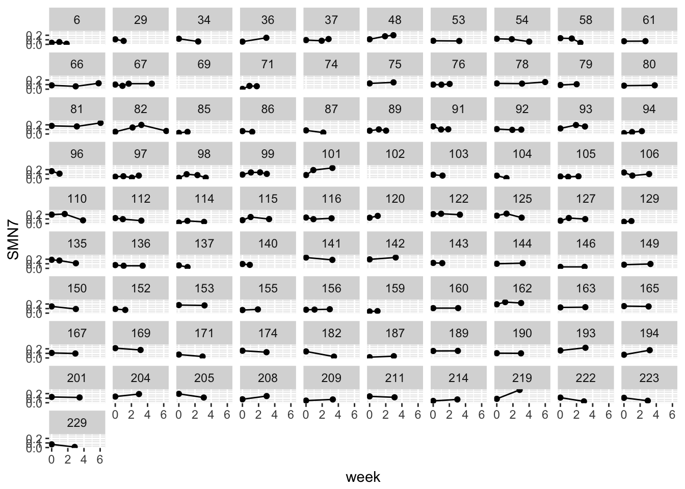

Chapter 2 LDA basics
2.1 Motivation, terms, concepts
2.1.1 Why longtiduinal?
At least 6 reasons:
Identification of intraindiviaul change (and stability). Do you increase or decrease with time or age. Is this pattern monotonic? Should this best be conceptualized as a stable process or something that is more dynamic? On average how do people change?
Inter-individual differences in intraindividual change. Does everyone change the same? Do some people start higher but change less? Do some increase while some decrease?
Examine joint relationship among intraindividual change for two or more constructs. If variable X goes up does variable Y also go up across time? Does this always happen or only during certain times? Is this association due to a third variable or does it mean that change occurs for similar reasons?
Determinants of intraindividual change. What are the repeated experiences that can push construct X around. Do these have similar effects at all times?
Determinants of interindividual differences in intraindividual change. Do events, background characteristics, interventions or other between person characteristic shape why certain people change while others don’t?
Inter-individual differences in intraindividual fluctuation and determinants of intraindividual fluctuation. Does everyone vary the same? Why are some more variable than others?
2.1.2 Types of change (most common)
There are many ways to think of change and stability. We will only have time to go into a few of these types, but it is helpful to think about what type you are interested in when you plan a project or sit down to analyze data.
- Differential / rank order consistency/ rank order stability. Goes by many names but in the end it is just a correlation. This is a group/sample/population level variable and indexes the relative standing of a person with regard to the rest o f the members in the sample. Does not take into account mean structure. Best used with heterotypic continuity where the construct may be the same but the measurement of the construct changes e.g., childhood IQ or acting out in school versus when you are an adult.
A specialized case of this is ipsative change, which looks at the rank order of constructs within a person. This is not done on a single variable (depression) but on a broad number of them (all PD symptoms).
- Mean level/ absolute change. Takes into account mean structure and indexes absolute levels of a construct. A strong assumption is that the construct means (not a pun) the same thing across time. That is, my measure of depression is interpreted the same for a 40 year old and a 90 year old if I want to look at absolute differences between the two ages.
Mean level change is not dependent at all on rank order consistency. Can have no mean level change and high rank order consistency and vice versa.
- Individual differences in change. Rank order and mean level provide an index of change and or stability for the sample. Here this provides an assessment of change for an individual. For example, if it is typical to decline in cognitive ability do some people buck the trend and stay at their past level? Individual differences in change get at both mean level changes as well as the tendency of the sample to show stability. It is the type of change that we will focus on the most.
2.1.3 Between person versus within person
Or in other words these are the shortened version of interindividaul differences in change versus intraindividaul differences in change. Refers to across people versus within a particular person. Often we are interested in both simultaneously. Related to Level 1 and Level 2 (for those of you familiar with this terminology).
We may be interested in understanding only between person variability, within person variability or both. When trying to understand within person variability it is typically the case that predictors of between person effects are constant (between person) variables (e.g., gender) that does not change from assessment to assessment. In contrast, within person variability is best understood by time varying predictors (within person variables e.g., daily mood). We will incorporate both time invariant (between person) and time varying (within person) predictors into our eventual model.
2.1.4 Trajectories, curves, change, growth… oh my
How do we refer to ‘change’? Usually it is easier to refer to pictorially or in terms of an equation. Putting a word onto it usually causes some confusion, which is why there are a lot of redundant terms in the literature. All of these might refer to the same thing when used within a model. However, the names of some models use these terms differently and thus can refer to different models or conditions that you are working with. In this class I will try to point out the important differences but you will be fine if you supplement your terms with graphs or equations.
2.2 Data analysis and data structures
2.2.1 Modeling frameworks: MLM & SEM
In this class (and in the field) two primary techniques are used with longitudinal models: MLM and SEM. At some levels they are completely equivalent. At others, one is better than the other and vice versa.
MLM/HLM is a simple extension of regression. As a result it is easy to interpret and implement. In terms of longitudinal data it is easier to run models when the time of measurement differs from person to person. For this class we will use lme4 as our MLM program but there are many others we could use e.g., nlme.
SEM is related to regression in that regression is a subset of SEM techniques. In other words, an SEM program could run a simple regression analysis.
The primary advantage of MLM is that you may have assessment waves that vary in length between participants. An assumption of SEM models is that everyone has the same amount of time between assessment waves (though this can be somewhat relaxed). MLM is also better suited for complex error structures and complex nesting above and beyond assessments within person. It is also easier to model interactions.
SEM primary advantage is the ability to account for measurement error via latent assessment of the repeated measures. Other advantages include the ability to model multiple DVs at once, and do so in a flexible manner to look at, for example, the associations between change in one construct and change in the another. Another major advantage is the ability to look at latent groups via latent class or mixture models.
Bottom line: MLM is probably best suited for “basic” growth models. More complex analyses of change would benefit from an SEM approach.
2.2.2 Wide and Long form
Depending on what type of analysis you want to perform you may need to restructure your data. I recommend the combination of tidyr and dplyr (among others) to restructure and manage your dataframes. The first decision you need to make is whether you want your data structured in a long or a wide format. There are multiple names to refer to these two types: multivariate vs univariate, person-level vs person-period, etc but they all refer to the same idea. How to structure your data depends on both what level of analysis (individual, dyad, household) and what type of analyses (MLM/SEM). Typically our focus is on individuals.
Wide form is common among non-longitudinal data. It has one line per individual with all of their repeated measures in the same row, each with some name to distinguish which assessment wave the data came from. In general, this format is used for SEM.
## # A tibble: 3 x 4
## ID ext_1 ext_2 ext_3
## <dbl> <dbl> <dbl> <dbl>
## 1 1 4 4 4
## 2 2 6 5 4
## 3 3 4 5 6In contrast, long format has a row per observation. Thus, participants likely have many rows, each one referring to a different assessment wave. There are fewer variables in this format which makes organization somewhat easier. Thus this has been referred to as “Tidy” data. Graphing with ggplot is facilitated when using tidy data such as being in the long format.
## # A tibble: 9 x 3
## ID time ext
## <dbl> <dbl> <dbl>
## 1 1 1 4
## 2 1 2 4
## 3 1 3 4
## 4 2 1 6
## 5 2 2 5
## 6 2 3 4
## 7 3 1 4
## 8 3 2 5
## 9 3 3 6How do you go back and forth? To do so use the gather and spread functions of tidyr package. Gather goes from wide to long.
library(tidyr)
wide_to_long <- wide %>%
gather(ext_1:ext_3,key = "time", value = "ext")
wide_to_long## # A tibble: 9 x 3
## ID time ext
## <dbl> <chr> <dbl>
## 1 1 ext_1 4
## 2 2 ext_1 6
## 3 3 ext_1 4
## 4 1 ext_2 4
## 5 2 ext_2 5
## 6 3 ext_2 5
## 7 1 ext_3 4
## 8 2 ext_3 4
## 9 3 ext_3 6This is equivalent code
wide_to_long <- wide %>%
gather(-ID,key = "time", value = "ext") %>%
arrange(ID)The separate function could be used to get only the assessment wave number. This might be useful when combining data together or for creating a common time metric for everyone.
wide_to_long2 <- wide_to_long %>%
separate(time, into = c("omit", "wave"), sep = "_", convert = TRUE) %>%
select(-omit) %>%
arrange(ID)
wide_to_long2## # A tibble: 9 x 3
## ID wave ext
## <dbl> <int> <dbl>
## 1 1 1 4
## 2 1 2 4
## 3 1 3 4
## 4 2 1 6
## 5 2 2 5
## 6 2 3 4
## 7 3 1 4
## 8 3 2 5
## 9 3 3 6# Note that the seperate function will identify non numeric characters and use that to seperate the values. You can omit the sep = function to check yourself. One issue that comes up here is that we have differing dates for each assessment. Ideally we would like to utilize that extra information.
## # A tibble: 3 x 7
## ID ext_1 ext_2 ext_3 date_1 date_2 date_3
## <dbl> <dbl> <dbl> <dbl> <chr> <chr> <chr>
## 1 1 4 4 4 1/1/10 5/1/10 8/1/10
## 2 2 6 5 4 1/6/10 4/10/10 9/1/10
## 3 3 4 5 6 1/8/10 4/25/10 9/13/10How do we fix it? The same way we would with multiple variables we want to convert. Wave, along with ID helps us keep track of what variables go with which person at which time. Together, the two serve as a unique identifier. To better understand the code go through each line to see what the intervening data frame looks like.
long.date <- wide.date %>%
gather(-ID, key = "time", value = "value") %>%
separate(time, into = c("variable", "wave")) %>%
spread(variable,value)
long.date## # A tibble: 9 x 4
## ID wave date ext
## * <dbl> <chr> <chr> <chr>
## 1 1 1 1/1/10 4
## 2 1 2 5/1/10 4
## 3 1 3 8/1/10 4
## 4 2 1 1/6/10 6
## 5 2 2 4/10/10 5
## 6 2 3 9/1/10 4
## 7 3 1 1/8/10 4
## 8 3 2 4/25/10 5
## 9 3 3 9/13/10 6One difficulty of creating a wave variable is whether or not the variables are named in a manner such that 1) assessment wave is easily identifiable (e.g. does _a always refer to the first wave whereas _b always refer to the second?) and 2) if that is consistent across variables. Having a wave identifier for your variables is important/necessary. Having an easily selected one (ie at the end of the variable name, hopefully separated by an underscore or a period). If assessment wave separators are embedded within the variable name it will be harder to covert your data. Often, variable data is attached at the end of a name such as SWB_4 to refer to the fourth item in a scale. This may obscure wave identification as in SWB_A_4. A similar naming problem can occur with multiple reports e.g,. SWB_4_parent. I recommend putting wave identification last. The difficulties become partly moot when working in long format as opposed to wide.
In the above code we used spread to go from long to wide as a means of creating a long dataset where there were multiple variables. Technically this is not a tidy dataset in that it comprises of both long and wide information, but it is the typical format used for MLM analyses.
Going from long to wide uses spread function as seen above, which we will utilize when converting our MLM models to SEM models.
long_to_wide <- long %>%
spread(time, ext)
long_to_wide## # A tibble: 3 x 4
## ID `1` `2` `3`
## * <dbl> <dbl> <dbl> <dbl>
## 1 1 4 4 4
## 2 2 6 5 4
## 3 3 4 5 6Note that this is technically the dataframe format that we want. The problem is that our variable names are numeric. This often causes problems. When working with tibbles use backticks ‘to refer to the column e.g., select(’1’)
2.2.2.1 meaningful time metric
Time is the most important part of longitudinal analyses. Without some sort of explicit operationalization of time or thought into how you handle time in your analyses you are not conducting longitudinal analyses. The key to interpretting your output is to know how you handled your time variable. What units is it in? Does everyone have the same differences between assessments? Is time something you are explicitly interested in or merely there as a means to collect repeated measures? We will discuss more of these as the semester progresses. Right now however an important distinction is what should the scale of our x-axis variable, time, be in?
At one level, the distinction is relevent to what is the process that is changing someone? Is it a naturally occuring devlopmental process? Then maybe age is the best metric. What about tracking childs cognitive ability, something that might be influenced by level of schooling? Here grade may be more important than age. Another common metric is time in study. This may be usefull if you are running an intervention or if you want to put everyone on the same starting metric and then control for nuisance variables like age or schooling level. Similarly, year of study as a prime time candidate may be useful if you are working from panel studies and interested in historical events and or cohort effects. As seen above,a wave variable (ie study measurement occastion) may be good enough to use as a time metric (though this makes some assumptions about the regularity of assessments both within and across people).
Depending on your choice of time metric you may see different rates of change and variability in change. For psychological applications the most common would be age and time in study (followed by grades for assessments of kids). Age is nice because it captures a number of developmental processes thought to drive change (maturation, history, time-in-study) but does not identify a single reason. Time in study is the opposite in that it does not index any other type of change but that simplicity aides in testing different reasons for change (e.g, age moderation).
2.2.3 Graphing
library(ggplot2)2.3 Putting it together example
Using some resting state imaging data
gg1 <- ggplot(example,
aes(x = week, y = SMN7, group = ID)) + geom_point()
print(gg1)## Warning: Removed 9 rows containing missing values (geom_point).2.3.1 a person level
gg2 <- ggplot(example,
aes(x = week, y = SMN7, group = ID)) + geom_line()
gg2faceting
gg3 <- ggplot(example,
aes(x = week, y = SMN7, group = ID)) + geom_line() + geom_point() + facet_wrap( ~ ID)
gg3## Warning: Removed 9 rows containing missing values (geom_point).
gg4 <- ggplot(example,
aes(x = week, y = SMN7, group = ID)) + geom_line() + facet_grid(. ~ group)
gg4gg5 <- gg2 + aes(colour = factor(ID)) + guides(colour=FALSE)
gg5set.seed(11)
ex.random <- example %>%
select(ID) %>%
distinct %>%
sample_n(10)
example2 <-
left_join(ex.random, example) ## Joining, by = "ID"gg6 <- ggplot(example2,
aes(x = week, y = SMN7, group = ID)) + geom_point() + stat_smooth(method="lm") + facet_wrap( ~ID)
gg6## Warning in qt((1 - level)/2, df): NaNs produced
## Warning in qt((1 - level)/2, df): NaNs produced
## Warning in qt((1 - level)/2, df): NaNs produced
## Warning in qt((1 - level)/2, df): NaNs produced
## Warning in qt((1 - level)/2, df): NaNs producedlets look at individual level regressions
library(tidyverse)
library(broom)
regressions <- example2 %>%
group_by(ID) %>%
do(tidy(lm(SMN7 ~ week, data=.)))
regressions## # A tibble: 20 x 6
## # Groups: ID [10]
## ID term estimate std.error statistic p.value
## <int> <chr> <dbl> <dbl> <dbl> <dbl>
## 1 6 (Intercept) 0.043751626 0.019715849 2.2191095 0.26953127
## 2 6 week -0.011495133 0.016432601 -0.6995322 0.61139970
## 3 29 (Intercept) 0.110400000 NaN NaN NaN
## 4 29 week -0.033032982 NaN NaN NaN
## 5 48 (Intercept) 0.113337786 0.006560796 17.2750049 0.03681099
## 6 48 week 0.030970692 0.003240913 9.5561620 0.06637719
## 7 54 (Intercept) 0.129501865 0.014599949 8.8700220 0.07147028
## 8 54 week -0.015721671 0.005719476 -2.7487959 0.22212408
## 9 66 (Intercept) 0.069222338 0.034173465 2.0256166 0.29193874
## 10 66 week 0.007679576 0.009070045 0.8466966 0.55272806
## 11 87 (Intercept) 0.078700000 NaN NaN NaN
## 12 87 week -0.022742308 NaN NaN NaN
## 13 89 (Intercept) 0.079337057 0.020886636 3.7984602 0.16388088
## 14 89 week 0.001695623 0.015490902 0.1094593 0.93059237
## 15 120 (Intercept) 0.127500000 NaN NaN NaN
## 16 120 week 0.040389344 NaN NaN NaN
## 17 174 (Intercept) 0.158100000 NaN NaN NaN
## 18 174 week -0.010711592 NaN NaN NaN
## 19 205 (Intercept) 0.195400000 NaN NaN NaN
## 20 205 week -0.026256661 NaN NaN NaNregressions %>%
group_by(term) %>%
summarise(avg.reg = mean(estimate))## # A tibble: 2 x 2
## term avg.reg
## <chr> <dbl>
## 1 (Intercept) 0.110525067
## 2 week -0.003922511average trend
gg7 <- gg1 <- ggplot(example, aes(x = week, y = SMN7)) + geom_point() + stat_smooth()
gg7## `geom_smooth()` using method = 'loess'## Warning: Removed 9 rows containing non-finite values (stat_smooth).## Warning: Removed 9 rows containing missing values (geom_point).gg8 <- ggplot(example, aes(x = week, y = SMN7)) + geom_point() + stat_smooth(method = "lm") + facet_grid(. ~ group)
gg8## Warning: Removed 9 rows containing non-finite values (stat_smooth).## Warning: Removed 9 rows containing missing values (geom_point).gg9 <- ggplot(example, aes(x = week, y = SMN7, group = ID)) + geom_point(alpha = 0.05) + stat_smooth(method = "lm", se = FALSE)
gg10 <- gg9 + stat_smooth(data = example, aes(x = week, y = SMN7, group=1, color = "black"), method = "lm", size = 2) + guides(fill=FALSE)
gg11 <- gg10 + facet_grid(.~ group) + theme(legend.position="none")
gg11## Warning: Removed 9 rows containing non-finite values (stat_smooth).
## Warning: Removed 9 rows containing non-finite values (stat_smooth).## Warning: Removed 9 rows containing missing values (geom_point).2.4 What does this look like?
A fancy regression equation. That is it. Seriously.
What is different? Extra error terms, mostly. For regression, we think of error as existing in one big bucket. For MLMs (and other longitudinal models) we will be breaking up unexplained variance (error) into multiple buckets.
This is where fixed effects and random effects come into play. We will discuss this more next class, but the just is that fixed effects are the regression coefficients you are used to. Fixed effects index group level change. Random effects vary among individuals (in the longitudinal models we are talking about) and index variation from the group. For our purposes this is most easily seen thinking about an average group trajectory (fixed effect) and the random effect indexes how much variability there is around that group level effect.
2.5 Design considerations
2.5.1 number of assessment waves
Remember high school algebra: two points define a line. But, that assumes we can measure without error. Three assessment points will better define changes in psychological variables.
2.5.2 measuremnt
2.5.2.1 scale of measurement
What does it mean for categorical variables to change over time?
Can ranks, such as in preference for school subjects,
How would dichotomous responses impact ability to measure change?
Can I analyze childhood and adult variables simultaneously if assess the same construct, even though they may be measured differently?
2.5.2.2 standardizing
Why would z-scoring your variables be problematic?
2.5.2.3 reliability
The goal of longitudinal analyses is to understand why some construct changes or stays the same across time. A major difficulty in addressing this goal is whether you are able to accurately assess the construct of interest. One of the key characteristics (but not the only characteristic) is whether or not your assessment would be consistent if you gave an alternative measure or if you retook it immediately after your first assessment. This is known as reliability of measurement. To the extent that your measure is reliable it assesses true score variance as opposed to error variance. The amount of error score variance assessed is important given that error variance will masquerade as change across time given that error can correlate with anything else. The more error in your measurement the more change you will find. Of course this is unreliable change – change that is not true change, just stochastic noise.
To ensure that your rate of change is reliable assessed, a few thoughts must go into measurement of your variable of interest as well as the number of assessment waves.
2.6 Threats to validity
2.6.1 Missing data
2.6.1.1 types of missing data
On a scale from 1 to you’re completely screwed, how confident are you that the missingness is not related to your study variables?
Missing completely at random (MCAR) means that the missingness pattern is due entirely to randomness
Missing at random (MAR) means that there is conditional randomness. Missingness may be due to other variables in the dateset. Pretty standard for longitudinal data.
Not missing at random (NMAR) means that the missingness is systematic based on the missing values and not associated with measures variables. For example, in a study of reading ability, kids with low reading ability drop out, due to not liking to take tests on reading ability. However, if reading ability is assocaited with other variables in the model, then this missingness becomes closer in kind of MAR, and thus somewhat less problematic.
Typically, we make the assumption we are working under MAR and thus we will have unbiased estimates when predictors of missingness are incorporated into the model.
2.6.1.2 how to handle missing data
Listwise? Nah
Full information maximum likelihood and other ML approaches? Sure. Multiple imputation? Cannot hurt.
2.6.2 Attrition/Mortality
Major contributor to missing data
2.6.3 History/cohort
Know that the processes driving change can be due to a specific event or cohort
2.6.4 Maturation
Change may occur because of natural processes. Thus if you just follow someone across time they will likely change irregardless of say, if they are in the control group
2.6.5 Testing
Having people take the same survey, test or interview multiple times may lead them to respond differently. Does that change result from development or does it result from them being familiar with the test?
2.6.6 Selection
If you are looking at life events, know that life events are not distributed randomly. Moreover, people who stay in studies and even sign up for studies are different from those that do not. As a result, it is often hard to make internally valid inferences with longitudinal data.
2.7 Why not RM ANOVA?
Cannot handle missing data
Assumes rate of change is the same for all individuals.
Time is usally done with orthogonal polynomials, making it difficult to interpret or to model non-linear. In other words, you have flexibility on how you want to model time.
Accounting for correlation across time uses up many paramters, MLM is more efficient.
Can accomidate differences in time between assessment waves across participants
Handles arious types of predictors - continuous vs nominal & static vs dynamic
2.8 Now you try
Move your data into a long format and a wide format. Did you have any specific challenges that you encountered? If so, discuss them.
Create a wave variable and date variable (if applicable).
What is your sample size for each wave of assessment?
Take the date variable and convert it to a different date format such as time in study or age (if appropriate). What scale is most suitable for your analyses? (weeks/months/years?)
Graph your data using the different time metrics, fitting individual curves for each person.
Create an overall average trend of your data (split up into groups if appropriate). Attempt to color your individual data points and/or shade different lines (highlight some particiapnts, highlight the average trend line but not the individual level lines)
Look at the correlations of your DV across time